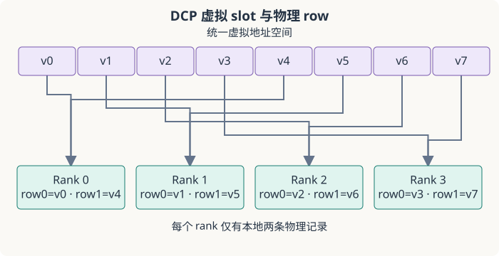
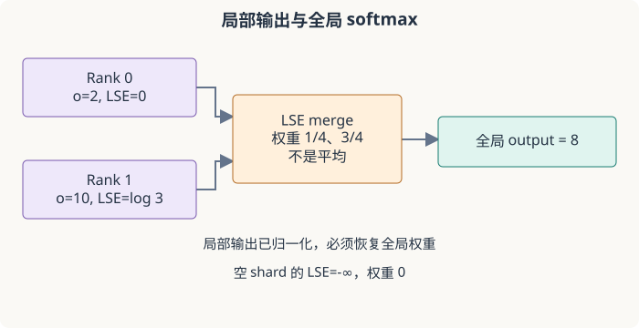

第 37 章 · SGLang 长上下文系统
Decode Context Parallelism：MLA 分片与精确 LSE 合并
每个 GPU 只读取局部 KV，为什么还能得到完整 attention 输出？
每个 GPU 只读取局部 KV，为什么还能得到完整 attention 输出？ 本章从具体反例出发，再追踪运行时数据结构与正确性条件。
1. MLA 为什么不能总靠 TP 减少 KV
Absorbed MLA 的 latent KV 在 query heads 间共享。TP 可以切 query heads 和权重，却可能让每个 rank 保存同一 latent history。DCP 在已有 TP group 内按位置分 KV，主路径为 absorbed MLA decode 与静态 target verification。对 Kimi K3 的 KDA request-indexed state 则不能因此扩容。
2. Virtual KV 位置与本地行
DCP=c，虚拟 slot v 的 owner 是 v mod c，本地 physical row 是 floor(v/c)。每 rank 物理容量 C、page size P；虚拟容量 Cc、page size Pc。c=4，v=13 时 owner1、row3；连续四个虚拟 token 各 rank 一条。与第33章按完整页交错分片不同。

3. 局部 softmax 不能直接平均
两个 rank：rank0 一个 score=0、value=2；rank1 一个 score=log(3)、value=10。局部归一化分别得到 2 与 10，平均为 6，但全局 softmax 是 (2+30)/4=8。必须将每 rank 的归一化常数带回来。空 shard 要用零权重（LSE=-∞），全部为空则没有有效 attention。
4. LSE reduction 的推导
令 l_r=log(sum_{j∈r} exp(s_j))，o_r 为该 shard 的归一化加权值。全局分母是各 shard 分母之和，因此 l=logsumexp(l_r)，全局输出如下。稳定计算先减 max(l_r)。若 backend 返回 base-2 LSE，则使用 2 的指数，不能混用自然指数。
5. 从 Q 到 packed A2A，再回 TP heads
每个 rank 先拥有 DCP group 所需 query heads，在本地 KV 上算 partial output 与 LSE，交换二者并按 head 布局完成归约，恢复 TP-local head shard。ag_rs、a2a、fi_a2a 的通信路径及平台条件不同；可选 replicated Q projection 用额外权重/计算避免每层 query gather。

6. 拓扑和正确性条件
DCP group 必须嵌套在 attention TP 中；官方简化示例 TP64、attention DP4 ⇒ 每 replica 16 ranks，DCP16 合法，DCP32 非法。启动参数的检查不能代替完整拓扑审查。PCP 是独立 prefill 优化；不能假设任意 model/backend 都支持 PCP+DCP。
7. 容量收益与真实延迟
四 rank、每 rank 32K 物理 token rows 的简化容量是 128K virtual rows，但分片并不保证 4×吞吐。还有权重、scratch、Q gather、A2A、kernel shape、短 context 下 collective 固定成本。验证单 rank dense 参考、不同 shard 长度、空 shard、极端 logits 和容差，再评估长 decode 的 ITL。
8. 交互：机制状态与反例
Decode CP 教学实验
错误：直接平均：o0=2，o1=10；平均 6 忽略 score 分母。
正确：LSE 合并：l0=0、l1=log(3)，权重 1/4、3/4；输出 8。
空 shard：l0=-∞，另一 shard 有效；权重 0、1，结果仅来自有效 shard。
教学模型仅验证机制与反例，不代表真实 GPU benchmark。
9. CPU 最小实验
使用 Python 标准库验证上文核心不变量，下载 dcp_lse_merge.py。源文件包含正例、异常或边界断言。
python3 examples/dcp_lse_merge.py实验不运行真实 SGLang GPU serving、collectives、网络传输或模型训练。
10. 源码阅读路线与证据
固定上游快照 b1ef3a60797aa6c29bcfa4cc3bc135dd2f19ec22。论文贡献、运行时实现和教学推导分开标注。
- Virtual KV layout / Architecture：DCP stripes logical positions across ranks and widens virtual capacity and page size by group size.
- MLA decode dataflow：Partial normalized output and LSE are exchanged and merged with exact softmax weighting, modulo numerical order.
- localize_dcp_indices / dcp_local_row：Layout code localizes virtual indices for rank-local cache access.
- dcp_a2a_lse_reduce：DCP communication code implements A2A LSE reduction.
- Enable DCP / Query-projection replication：Groups must fit inside attention TP replicas; query replication trades extra weights and GEMM for fewer collectives.